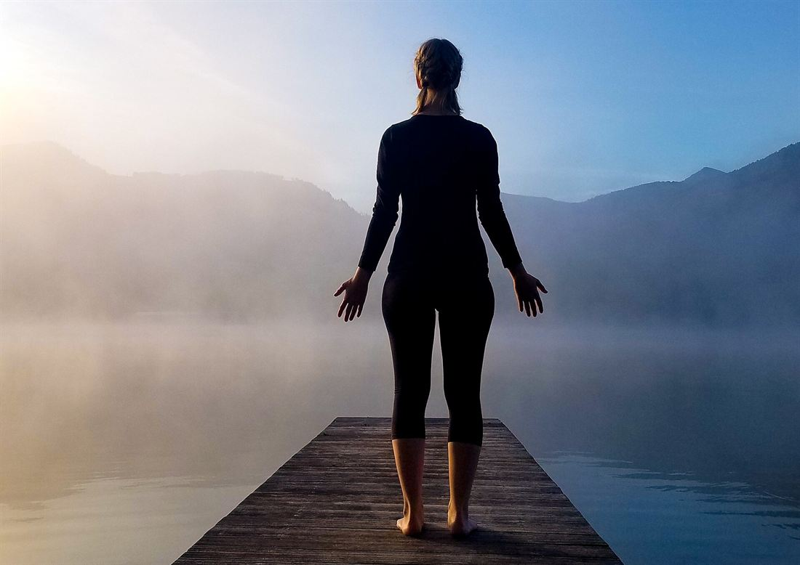

Mountain Pose
Tadasana- Level
- Beginner
- Type
- Standing
- Hold
- 5–10 breaths
- Focus
- Posture, alignment
Mountain Pose looks like simply standing still, yet it holds the blueprint for every standing posture. Learning to stand evenly, with a long spine and a quiet breath, carries straight into Warrior, Triangle and Tree.
How to practice
- Stand with feet hip-width apart or big toes touching, the outer edges of the feet parallel.
- Spread the toes and press evenly through the big-toe mound, little-toe mound and heel.
- Lift the kneecaps gently by engaging the thighs, without locking the knees.
- Lengthen the tailbone toward the floor and draw the lower belly slightly in and up.
- Broaden the collarbones, relax the shoulders down and let the arms hang with palms facing forward or in.
- Balance the head over the pelvis, chin parallel to the floor, and breathe smoothly through the nose.
Why practice it
- Builds awareness of posture and how weight is distributed through the feet
- Engages the thighs, core and muscles that support an upright spine
- Provides a steady, calm starting point between standing poses
Make it easier
Stand with your back against a wall to feel the alignment of heels, pelvis, shoulder blades and the back of the head.
Caution: If you feel light-headed when standing still, keep the feet wider and the knees soft, and sit down if dizziness continues.